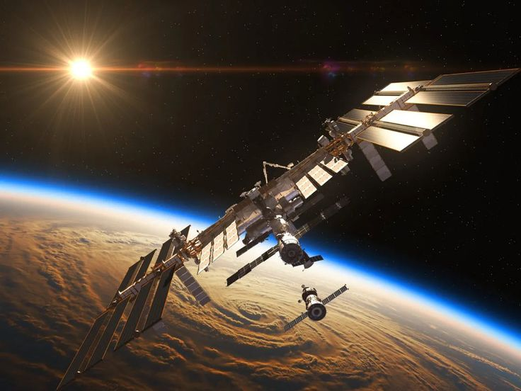

| 🚀 Exploración Espacial | |
| Inicio Galaxias Planetas Exploración Recomendaciones | |
| Avances en la exploración del universo 🌌 | |
Exploración del espacioLa exploración espacial permite a los científicos estudiar el universo y descubrir nuevos planetas, estrellas y galaxias. Agencias como la NASA han enviado misiones a Marte y otros planetas para investigar si existe vida fuera de la Tierra.  |
Dato curiosoEl primer hombre en la Luna fue en 1969. |
|
2026 Todos los derechos reservados Karla Rubí Magaña Alcudia |
|